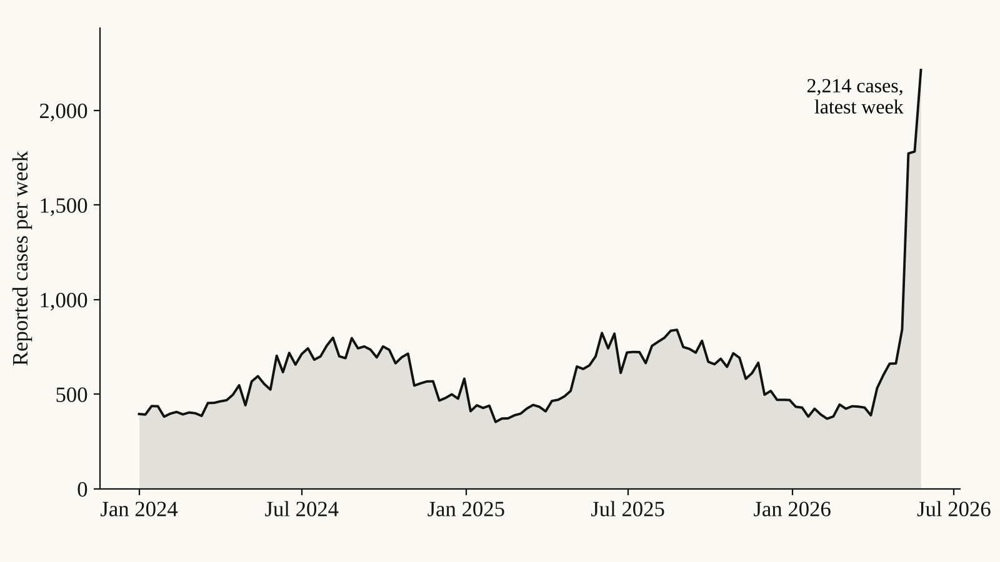
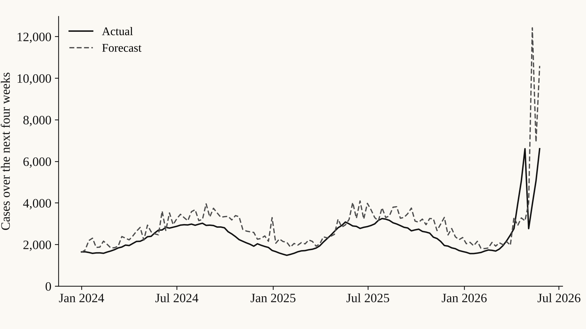
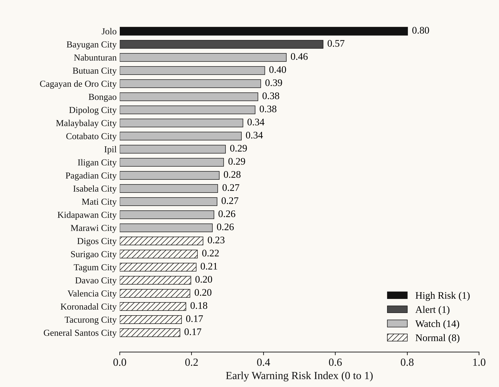
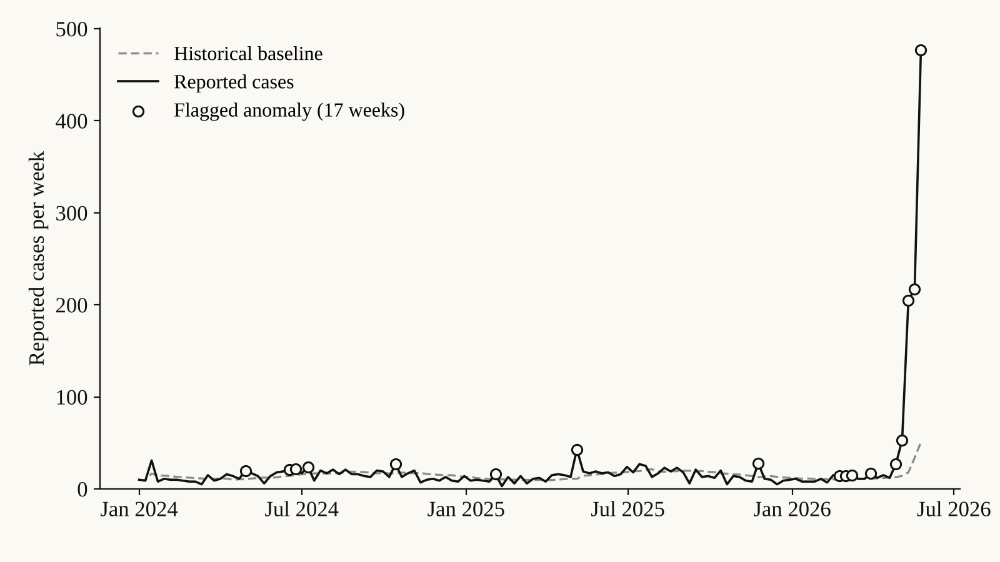

Projects · Public health analytics · Forecasting · Risk scoring
EpiWatch Mindanao Public Health Risk Forecasting
A simulated public health early warning system with case forecasting, anomaly detection, risk scoring, and dashboard-ready outputs.

Context
Public health teams need a structured way to monitor disease trends, detect abnormal increases, and prioritize municipalities for validation and preparedness review.
Data
Synthetic municipality-week dengue-like surveillance data connected with sociodemographic vulnerability, facility access, and environmental proxy datasets.
Method
I generated synthetic surveillance data, engineered incidence and lag features, forecasted next-four-week case burden, detected anomalies against local baselines, and built an Early Warning Risk Index.
Output
Dashboard-ready fact and dimension tables, forecast outputs, anomaly results, risk classifications, Excel data dictionary, methodology notes, technical report, and dashboard build plan.
Findings
The prototype produced 3,024 municipality-week records and classified the latest week into 1 High Risk, 1 Alert, 14 Watch, and 8 Normal municipalities. Jolo ranked highest with a 0.80 risk index after a sharp rise above its baseline, and the forecasting model’s MAE was 36.76 cases.
Reflection
This project is a planning-support analytics prototype, not an official surveillance system. Its value is in the transparent workflow: trend detection, risk drivers, and responsible decision-support reporting.
Figures


